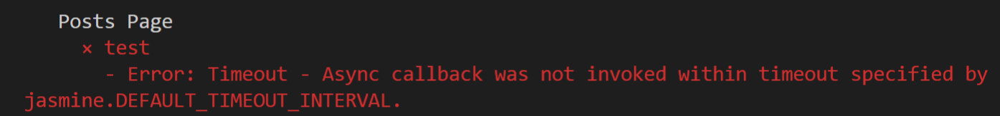
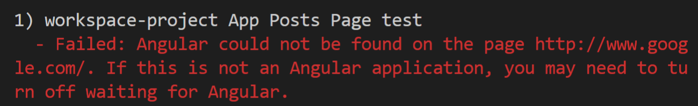

Protractor
on the top of the Testing Pyramid

Protractor is an end-to-end test framework for Angular and AngularJS applications.
Protractor runs tests against your application running in a real browser, interacting with it as a user would.
How It Works

- Protractor is a Node.js program
- Protractor is a wrapper around WebDriverJS
- Selenium is a browser automation framework, includes Selenium Server, the WebDriver APIs, and the WebDriver browser drivers.
Protractor needs two files to run:
1. Configuration file
2. Test or spec file
Configuration file:
capabilities: {
browserName: 'chrome',
maxInstances: 3,
chromeOptions: {
args: [ "--headless", "--window-size=800,600" ]
}
}
Protractor supports the two latest major versions of Chrome, Firefox, Safari, and IE.

directConnect: true,
framework: 'jasmine'
onPrepare() {
require('ts-node').register({
project: require('path').join(__dirname, './tsconfig.json')
});
jasmine.getEnv().addReporter(new SpecReporter({
spec: { displayStacktrace: true }
}));
}
Spec/test file
describe('App Greeting page', async () => {
it('should greet the named user', async () => {
await browser.get('/greeting');
await element(by.name('userName')).sendKeys('John');
const greeting = element(by.className('greeting'));
expect(greeting.getText()).toEqual('Hello John!');
});
});
- Protractor and Jasmin syntax only...
- any interaction with application code
it('should add new Post Message', async () => {
await browser.get('/posts-page');
await element(by.css('.user-message-input'))
.sendKeys('My test message');
await element(by.id('submitButton'))
.click();
expect(await element.all(by.className('post'))
.get(0)
.getText())
.toContain('My test message');
});
Protractor API part:
- browser.get('/')
- element(by.css()), by.id(), by.className()
- element().click(), .getText(), .all().get(0)
Tests organization
for building an Efficient Ecosystem
Pattern Page Object
...simply models pages as objects within the test code.
Helps to avoid:
- - Code duplication
- - Maintenance problem
- - Hard to understand
Page Object
posts.po.ts or posts.page-object.ts
import { browser, by, element, ElementFinder } from 'protractor';
export class PostsPage extends BasePage {
public async navigateToPostsPage(): Promise {
return super.navigateTo('/posts-page');
}
public getEnterPostMessageInputField(): ElementFinder {
return element(by.css('.user-message-input'));
}
// more methods...
}
public async enterPostMessage(message: string): Promise {
return this.getEnterPostMessageInputField()
.sendKeys('My test message');
}
public getPublishPostButton(): ElementFinder {
return element(by.id('submitButton'));
}
public async clickPublishPostButton(): Promise {
return this.getPublishPostButton().click();
}
public async getLastPublishedPostMessage(): Promise {
return await element.all(by.className('post'))
.get(0)
.getText();
}
}
Usage Page Object in spec file
posts.e2e-spec.ts
import { PostsPage } from './posts-page.po';
describe('Posts Page', async () => {
let postsPO: PostsPage;
beforeAll(async () => {
postsPO = new PostsPage();
postsPO.navigateToPostsPage();
});
it('should add new Post Message', async () => {
await postsPO.enterPostMessage('My test message');
await postsPO.clickPublishPostButton();
expect(await postsPO.getLastPublishedPostMessage())
.toContain('My test message');
});
it('should add new post message', async () => {
await element(by.css('.user-message-input'))
.sendKeys('My test message');
await element(by.id('submitButton'))
.click();
expect(await element.all(by.className('post'))
.get(0)
.getText())
.toContain('My test message');
});
Project Structure
Group your e2e tests in a structure that makes sense to the structure of your project
|-- test
|-- unit
|-- e2e
|-- page-objects
home-page.js
profile-page.js
contacts-page.js
home-spec.js
profile-spec.js
contacts-spec.js
- Finding your e2e related files should be intuitive and easy
- Makes the folder structure more readable
- Clearly separates e2e tests from unit tests

Timeouts
Because WebDriver tests are asynchronous and involve many components, there are several reasons why a timeout could occur in a Protractor test.
Protractor Timeouts
or
...it can ocure becouse
With Protractor, the test script is run using Node.js. Protractor runs an extra command before performing any action on the browser to ensure that the application being tested has stabilized.
Solution
...increase timeouts
Globaly in Protractor config file
allScriptsTimeout: timeout_in_millis,
jasmineNodeOpts: {
showColors: true,
defaultTimeoutInterval: timeout_in_millis,
print: function() {}
},
For Jasmine in certain spec file
jasmine.DEFAULT_TIMEOUT_INTERVAL = timeout_in_millis;
But...
For Angular apps, Protractor will wait until the Angular Zone stabilizes. This means long running async operations will block your test from continuing.
To work around this, run these tasks outside the Angular zone.
this.ngZone.runOutsideAngular(() => {
setTimeout(() => {
// Changes here will not propagate into your view.
this.ngZone.run(() => {
// Run inside the ngZone to trigger change detection.
});
}, REALLY_LONG_DELAY);
});
Non Angular Application
Navigating to third-party resources may come as a surprise
You can turn off waiting for Angular by setting
browser.waitForAngularEnabled(false);
browser.get('/non-angular-login-page.html');
// do something...
browser.waitForAngularEnabled(true);
browser.get('/page-containing-angular.html');
Best Practices
- Use TypeScript instead of JavaScript
- Implement Page Object Pattern
- One TypeScript file, one page object class
- Deal with JavaScript’s asynchronous behavior using async & await
- Test case should only call page object’s methods
- Avoid hidden assertions in the page object classes
- Have simple but effective project structure
- Test your test code more frequently
Summarize
- protractor is e2e test Framework for Angular applications supplied out of the box
- Wraps Selenium and provides us with improved syntax and special built-in hooks for Angular.
- TypeScript support is available and the library is operated and maintained by the huge Angular team.
- Angular official documentation suggests using this tool.